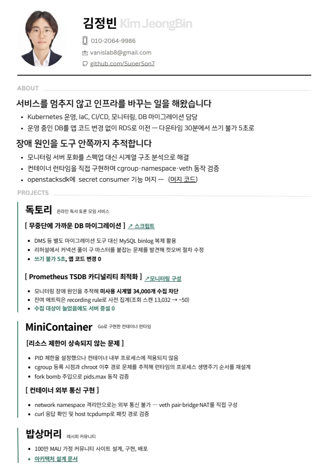
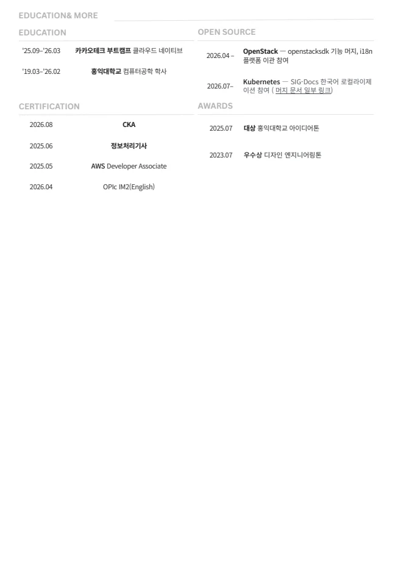

90%
Terraform IaC 표준화로 인프라 프로비저닝 시간 단축
Terraform IaC 표준화로 인프라 프로비저닝 시간 단축
Git diff 기반 변경 감지로 Build & Push 구간 개선
미사용 고카디널리티 시계열 수집 차단
SLO burn rate와 traffic gate로 알림 오탐 감소
nginx stream proxy 기반 DB 컷오버 쓰기 불가 구간
Cloud 인프라 설계, CI/CD 최적화, 모니터링 비용 절감, DB 마이그레이션을 경험했습니다. 컨테이너 런타임을 직접 구현하며 namespace, cgroup, veth, iptables의 동작 원리를 검증했고, OpenStack 오픈소스 기여를 통해 Gerrit 기반 리뷰 사이클도 경험하고 있습니다.
콘솔 수동 운영에서 발생한 drift와 휴먼에러를 Terraform, GitHub Actions, remote state 구조로 줄이고, 쿠버네티스 전환 후 폭증한 메트릭은 Alloy relabel과 recording rule로 다뤘습니다.
단순 구축보다 변경 영향 범위, 복구 경로, 관측 비용, 다운타임을 줄이는 선택을 중심으로 정리했습니다.
제공된 PDF 이력서를 웹에서 바로 확인할 수 있도록 원본 파일과 페이지 미리보기를 함께 배치했습니다.


포트폴리오 PDF 13페이지를 웹 미리보기로 옮겼습니다. 각 슬라이드는 원본 PDF와 동일한 구성으로 확인할 수 있습니다.
이력서와 포트폴리오 원본은 상단 문서 링크에서 확인할 수 있습니다.